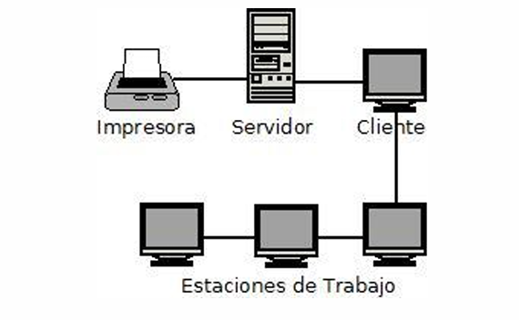
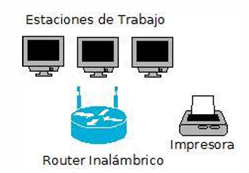
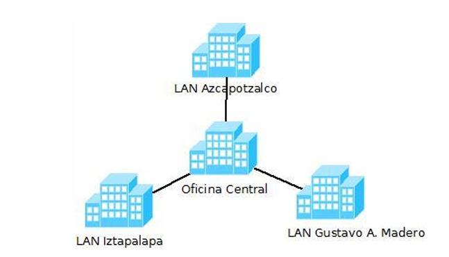
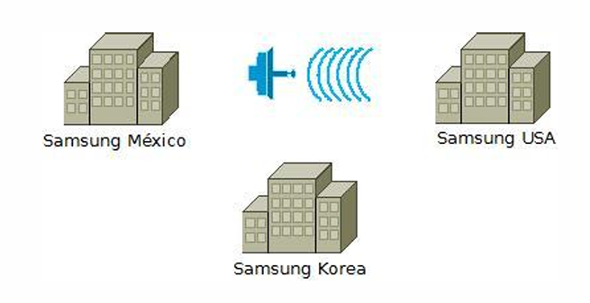
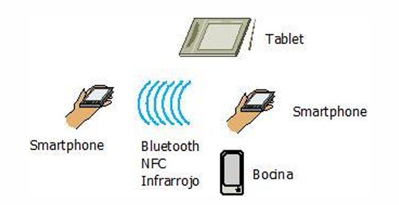
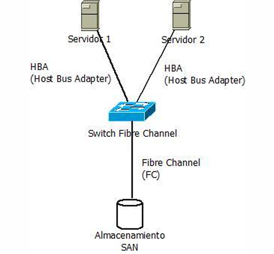

Cada tipo de red tiene características físicas y lógicas distintas que permiten conectar varios nodos. Se diferencian sobre todo por su alcance y por la tecnología que usan.
Red de corto alcance que conecta nodos dentro de una misma ubicación física, como una casa, un departamento, un local o un área de trabajo. Sus nodos comparten recursos, como una impresora, mediante el modelo cliente-servidor.
Ver ejemplo
Una impresora, un servidor y varias estaciones de trabajo conectados entre sí en una oficina.

Diagrama de una red LAN.
WLAN Red de área local inalámbrica
Es la variante inalámbrica de la LAN: no usa medios físicos de conexión, sino tecnología Wi-Fi. Un router inalámbrico mantiene conectados todos los nodos.
Ver ejemplo
Estaciones de trabajo e impresora conectadas por Wi-Fi a un router inalámbrico.

Diagrama de una red WLAN.
VLAN Red de área local virtual
Divide una red LAN en segmentos lógicos independientes sin necesidad de hardware adicional. Se configura en los puertos del switch. Reduce el tamaño del dominio de difusión y facilita la administración de la red.
Ver ejemplo
Una empresa separa a Jefaturas (VLAN 10, puertos f0/0-10) de Capital Humano (VLAN 20, puertos f0/11-20) para que sus datos no se mezclen.
Diagrama de una red VLAN.
MAN Red de área metropolitana
Tiene mayor alcance que una red local: cubre hasta 10 kilómetros o más, como una ciudad, un municipio o una alcaldía. Conecta varias redes LAN, WLAN o VLAN ubicadas en distintos puntos de una misma área metropolitana.
Ver ejemplo
Las redes locales de Azcapotzalco, Iztapalapa y Gustavo A. Madero conectadas con una oficina central. También se usa para unir edificios gubernamentales, sucursales o centros educativos.

Diagrama de una red MAN.
WAN Red de área amplia
Conecta dispositivos o redes a grandes distancias, típicamente desde 100 km hasta miles de kilómetros, e incluso entre regiones, países o continentes. Suelen implementarla grandes organizaciones, gobiernos o proveedores de servicios.
Ver ejemplo
Una empresa como Samsung conecta sus sedes de México, Estados Unidos y Corea. Servicios globales como el correo corporativo, la nube o internet también funcionan sobre redes WAN.

Diagrama de una red WAN.
PAN Red de área personal
Conecta dispositivos muy cercanos entre sí, normalmente en un rango de 1 a 10 metros. Se conecta con tecnologías inalámbricas de corto alcance: Bluetooth, NFC o infrarrojo.
Ver ejemplo
Un smartphone conectado a audífonos Bluetooth, a un reloj inteligente o a una tablet.

Diagrama de una red PAN.
SAN Red de área de almacenamiento
Conecta servidores con dispositivos de almacenamiento, como matrices de discos, cabinas o librerías de respaldo, mediante una infraestructura de alta velocidad basada en fibra óptica o Fibre Channel. El tráfico de almacenamiento va separado del tráfico de usuarios y aplicaciones.
Ver ejemplo
Dos servidores, cada uno con su HBA (Host Bus Adapter), conectados por un switch Fibre Channel a un mismo almacenamiento.

Diagrama de una red SAN.
CAN Red de área de campus
Reúne varias redes LAN interconectadas dentro de un mismo entorno, como una universidad, un instituto, una base militar o un parque tecnológico. Tiene más alcance que una LAN, pero no llega al de una MAN. A veces se considera un subtipo de MAN.
Ver ejemplo
Varias escuelas de cómputo de nivel superior conectadas a la CAN del IPN mediante un enlace troncal.